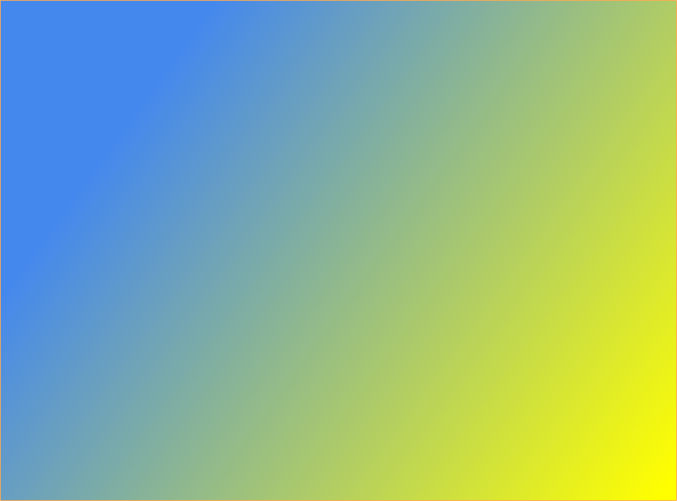

CVLTURAE: riesgos cómodos
Pronto podrá ver y utilizar CVLTVRAE para gestionar de fácilmente la burocracia de Prevención de Riesgos Laborales.
Le servirá...
a usted, como empresario;
a usted, como trabajador;
a usted, como inspector;
a usted, como delegado.